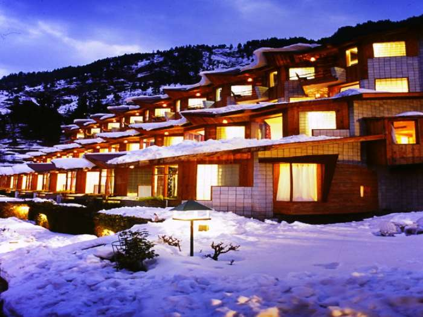
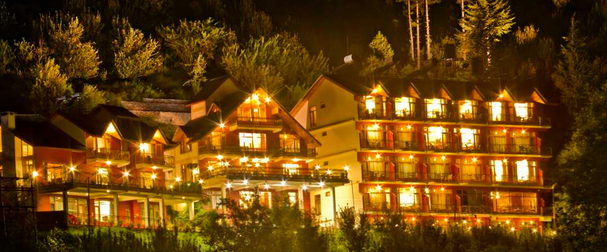
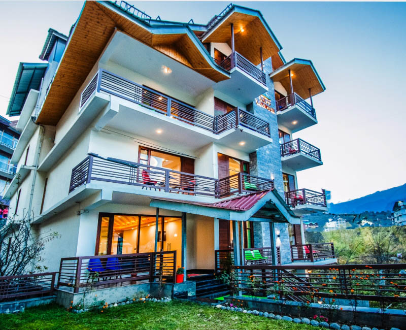
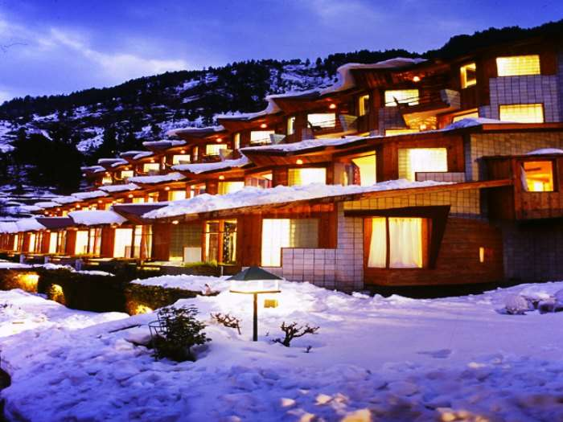
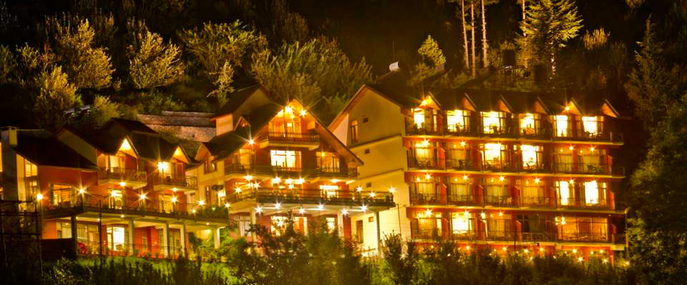
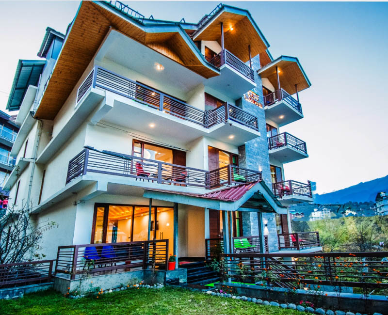

Manali
Tourist places in Manali:-

A mecca for adventure sports enthusiasts, Manali is situated at 6,398 ft in the Himalayas. Located in the Kullu district of Himachal Pradesh, its snow covered peaks make it a popular honeymoon destination. Considered the twin town of Kullu, Manali’s scenic beauty, history and culture give it the sobriquet of the Valley of the Gods. When hippies flocked the city in the ’60s and ’70s in pursuit of their utopian dream, Manali became very popular in the west.
With the highest number of tourists during summer, Christmas and New Year, the tariff for food and rooms can rise to almost triple their cost. As the main jumping off point for Ladakh, Lahaul and Spiti, buses from Manali ply to Leh, Keylong and Kaza from June to October everyday.
One day, Varvasvata, the seventh incarnation of Manu found a tiny fish in his bathing water. The fish told him to look after it with devotion as one day it would do him a great service. The seventh Manu cared for the fish till the day it grew so huge that he released it into the sea. Before departing, the fish warned Manu of an impending deluge when the entire world would be submerged and bade him to build a sea worthy ark. When the flood came, Varvasvata and seven sages were towed to safety by Matsya, the fish which is regarded as first avatar of Lord Vishnu. As the water subsided the seventh Manu’s ark came to the rest on a hill side and the place was named Manali (2050 m) after him.
Trekking in Manali:
Most of the treks from Manali are one day journeys, the Lamadugh Meadows, Solang Valley and the Koshla-Tree line are the most popular of them all. The best time to trek in Manali is between April and November.
 With some of the finest stretches of white water, high quality rafts and experienced crew, white water rafting in Manali is a safe sport.
The Rohtang Pass and Solang valley offer great opportunities for paragliding.
You can also practice rock climbing, rappelling, skiing, ice climbing, snowboarding and ski touring in Manali.
With some of the finest stretches of white water, high quality rafts and experienced crew, white water rafting in Manali is a safe sport.
The Rohtang Pass and Solang valley offer great opportunities for paragliding.
You can also practice rock climbing, rappelling, skiing, ice climbing, snowboarding and ski touring in Manali.
BEST PLACES TO STAY IN MANALI
While homestays are the best way to enjoy the culture of the locals, Manali also offers luxury resorts, river-side cottages, deluxe hotels and three star budget properties.
BEST PLACES TO EAT IN MANALI
From Punjabi and south Indian to Italian, Tibetan and Chinese, Manali has a large variety of food options. The mall road in Manali offers roadside food stalls and lavish restaurants.
Hotel's in Manali:-

 




